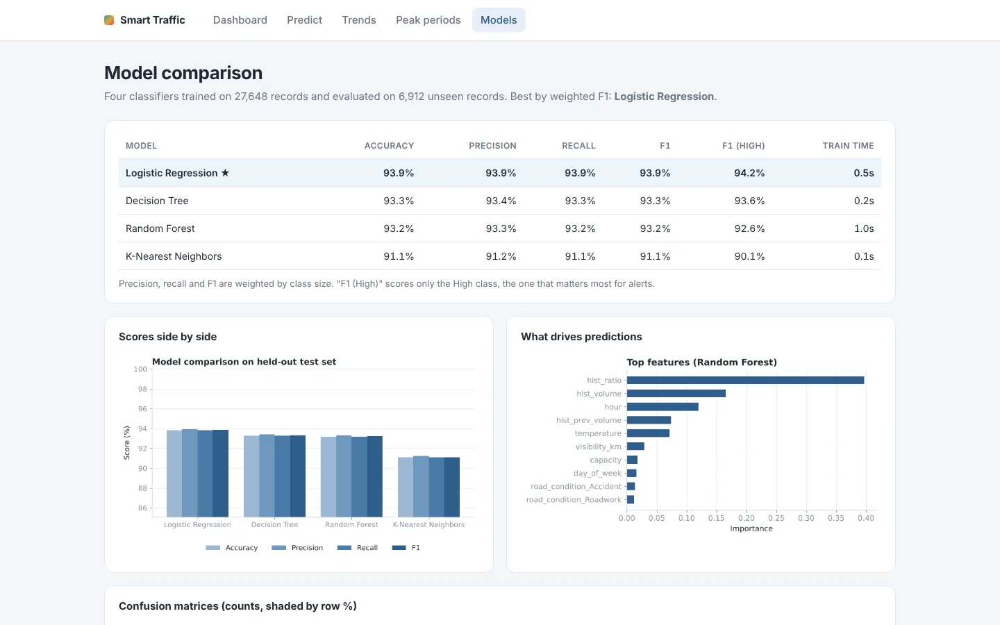

012026Machine learning · Web app
Smart Traffic
Predicting road congestion before you leave.
A Flask app that forecasts Low, Medium or High congestion for any road, hour, weather and road condition. I generated 34,560 hourly records across 12 roads, trained and compared four classifiers without leaking the answer into the inputs, and built dashboards for trends, peak hours and model performance.
- 34,560hourly records
- 4models compared
- 93.9%held-out accuracy

